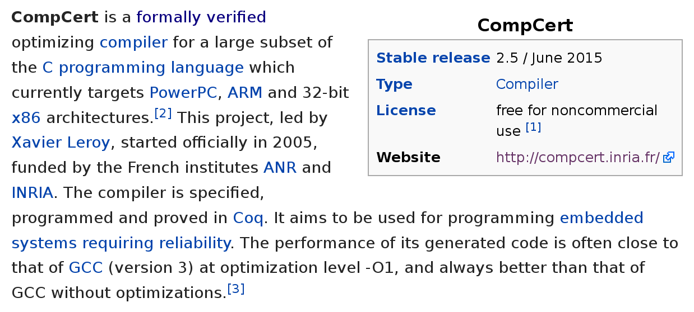
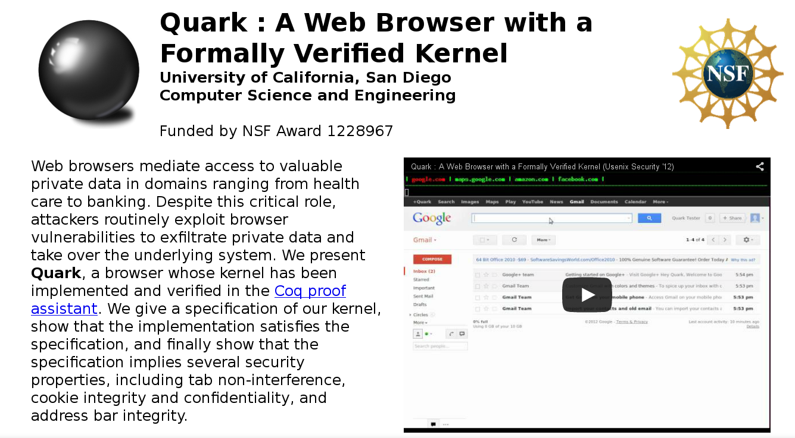
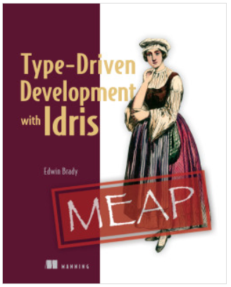

Type Driven Development
Eine Einführung in Idris
Frank Thomas
Abhängige Typen
https://en.wikipedia.org/wiki/Dependent_type:In computer science and logic, a dependent type is a type that depends on a value. [...] In functional programming languages like ATS, Agda, Idris and Epigram, dependent types prevent bugs by allowing extremely expressive types.
Bugs in Produktion können fatal sein
Verifizierter Microkernel

Verifizierter Compiler
Verifizierter Webbrowser
Idris Syntax
Java
static <T> Optional<T> lastOption(List<T> list) {
if (list.isEmpty())
return Optional.empty();
else
return Optional.of(list.get(list.size() - 1));
}
lastOption : List a -> Maybe a
lastOption [] = Nothing
lastOption (x :: []) = Just x
lastOption (x :: xs) = lastOption xs
Live Demo

Type-Driven Development with Idris
https://www.manning.com/books/type-driven-development-with-idris
Idris: http://www.idris-lang.org/
THE END
- Slides: http://fthomas.github.io/tdd-talk/- Code: https://github.com/fthomas/tdd-talk